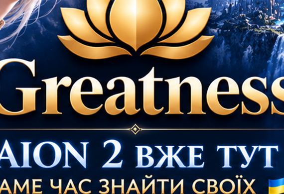

Активна та жива спільнота
Відкрита для всіх українців та іноземних друзів. Можна спілкуватися, знайомитися та знаходити людей для гри.

GREATNESS AION 2 · UA Discord ↗Українська спільнота гравців із великим досвідом у MMO.
Запрошуємо тебе стати частиною дружнього ком’юніті, де можна знайти напарників, отримати пораду, обговорити механіки гри або просто гарно провести час 😊
Greatness - українська спільнота гравців із великим досвідом у ММО.
Запрошуємо тебе стати частиною дружнього ком’юніті, де можна знайти напарників, отримати пораду, обговорити механіки гри або просто гарно провести час 😊
Ми хочемо зібрати людей, яким комфортно грати разом: від тих, хто тільки знайомиться з AION 2, до досвідчених MMO-гравців, яким є що підказати та чим поділитися.
Все те, заради чого зазвичай і шукають свою спільноту в MMO.
Відкрита для всіх українців та іноземних друзів. Можна спілкуватися, знайомитися та знаходити людей для гри.
Спільні активності, груповий контент та можливість регулярно грати разом.
Друзі та напарники для комфортної гри, а не нескінченний пошук випадкової групи.
Обмін досвідом, поради та допомога тим, хто тільки починає. Досвідченим гравцям — простір для реалізації своїх знань.
Корисна інформація, поради, гайди та обговорення AION 2, зібрані з досвіду гравців, які вже проходять цей шлях.
Без зайвого тиску та токсичності. Хочеться, щоб у спільноті було просто комфортно знаходитися.
...і ти шукаєш українських гравців — приєднуйся до GREATNESS та зустрічаємо реліз гри разом з нами! 🇺🇦
Тут не потрібно вигадувати собі роль — можна просто познайомитися, розповісти про свої цілі та плани й знайти своє місце у спільноті.
В спільноту додаємо після короткого знайомства — розкажемо про нас, ти поділишся своїми цілями та планами, і разом будемо брати топи AION 2.
Зайти в Discord ↗